- Technical specification
- Vink Customer Care Agent · Part 3 of 9
3 · Topics
Every topic below is generated from the topic YAML in src/botcomponents/. Open All nodes in order to see each node with its exact configuration: questions and the entity they use, Power Fx in Set variable, the inputs and outputs bound on each flow call, and every condition.
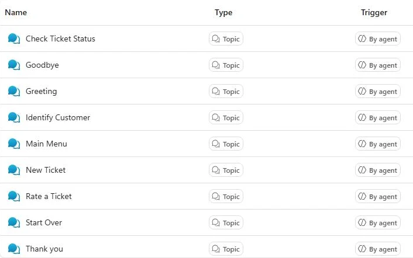
The pattern every account topic shares
- kind: BeginDialog # every account topic starts here
dialog: vin_CustomerCareAgent.topic.IdentifyCustomer
- kind: ConditionGroup
conditions:
- condition: =Global.CustomerVerified <> true
actions:
- kind: EndDialog # not verified: stop, show nothingThe guard keeps verification in one place. If a customer is already verified, Identify Customer returns at once; otherwise it asks for the email address and an order or customer number, then calls Find Customer (or Register Customer for a new customer).
Identify Customer
- Trigger
- The agent chooses (generative orchestration)
- Description
- Identifies and verifies the customer (email plus an order number or customer number) or registers a new customer. Other topics call it before they show or change anything on a customer's account. Use it when the customer wants to sign in, verify themselves or create an account.
- Inputs
- —
- Agent flows called
- Find Customer, Register Customer
- Topics redirected to
- —
- Globals used
ContactId,CurrentTicket,CustomerEmail,CustomerFirstName,CustomerFullName,CustomerNumber,CustomerVerified,IsVIP- Nodes
- 46
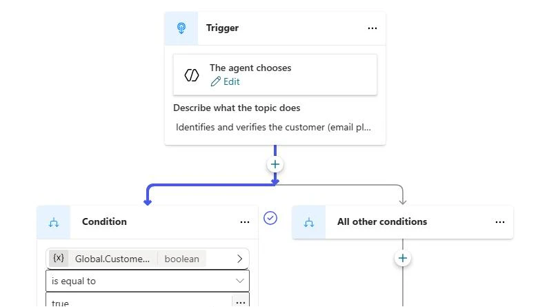

All 46 nodes in order from source
| # | Node | Configuration |
|---|---|---|
| 1 | Condition | Branch |
| 2 | ↳ End current topicif =Global.CustomerVerified = true | EndDialog |
| 3 | Set variable | Global.CurrentTicket = ="" |
| 4 | Set variable | Topic.Attempts = =0 |
| 5 | Question | Ask “To look up your account, what's your email address?” → Topic.Email (EmailPrebuiltEntity) |
| 6 | Action · agent flow | Call Find Customer In text==Topic.Email; text_1==""Out status→Topic.Status, contactid→Topic.ContactId, firstname→Topic.FirstName, fullname→Topic.FullName, customernumber→Topic.CustomerNumber, isvip→Topic.IsVIP, openticketcount→Topic.OpenCount, openticketsummary→Topic.OpenSummary |
| 7 | Condition | Branch |
| 8 | ↳ Adaptive cardif =Topic.Status = "NotFound" | Adaptive card → Topic.NewChoice |
| 9 | ↳ Conditionif =Topic.Status = "NotFound" | Branch |
| 10 | ↳ Go to stepif =Topic.NewChoice = "retry" | Go back to q_email |
| 11 | ↳ Questionelse | Ask “Great, let's set you up. What's your first name?” → Topic.NewFirst (StringPrebuiltEntity) |
| 12 | ↳ Questionelse | Ask “And your last name?” → Topic.NewLast (StringPrebuiltEntity) |
| 13 | ↳ Questionelse | Ask “What phone number can our team call you on if needed?” → Topic.NewPhone (StringPrebuiltEntity) |
| 14 | ↳ Action · agent flowelse | Call Register Customer In text==Topic.NewFirst; text_1==Topic.NewLast; text_2==Topic.Email; text_3==Topic.NewPhoneOut contactid→Topic.ContactId, customernumber→Topic.CustomerNumber, fullname→Topic.FullName, status→Topic.RegStatus |
| 15 | ↳ Conditionelse | Branch |
| 16 | ↳ Set variableif =Topic.RegStatus = "Created" || Topic.RegStatus = "Exists" | Topic.FirstName = =Topic.NewFirst |
| 17 | ↳ Set variableif =Topic.RegStatus = "Created" || Topic.RegStatus = "Exists" | Topic.IsVIP = ="No" |
| 18 | ↳ Set variableif =Topic.RegStatus = "Created" || Topic.RegStatus = "Exists" | Global.ContactId = =Topic.ContactId |
| 19 | ↳ Set variableif =Topic.RegStatus = "Created" || Topic.RegStatus = "Exists" | Global.CustomerFirstName = =Topic.FirstName |
| 20 | ↳ Set variableif =Topic.RegStatus = "Created" || Topic.RegStatus = "Exists" | Global.CustomerFullName = =Topic.FullName |
| 21 | ↳ Set variableif =Topic.RegStatus = "Created" || Topic.RegStatus = "Exists" | Global.CustomerEmail = =Topic.Email |
| 22 | ↳ Set variableif =Topic.RegStatus = "Created" || Topic.RegStatus = "Exists" | Global.CustomerNumber = =Topic.CustomerNumber |
| 23 | ↳ Set variableif =Topic.RegStatus = "Created" || Topic.RegStatus = "Exists" | Global.IsVIP = =Topic.IsVIP |
| 24 | ↳ Set variableif =Topic.RegStatus = "Created" || Topic.RegStatus = "Exists" | Global.CustomerVerified = =true |
| 25 | ↳ Messageif =Topic.RegStatus = "Created" || Topic.RegStatus = "Exists" | Say “Welcome to Vink Electronics, {Topic.NewFirst}! Your account is ready and your customer number is **{Topic.CustomerNumber}**. Keep it handy to verify yourself n…” |
| 26 | ↳ Messageelse | Say “Sorry, I couldn't create your account just now. Please try again in a few minutes.” |
| 27 | ↳ End all topicselse | CancelAllDialogs |
| 28 | ↳ Questionif =Topic.Status = "NeedVerification" | Ask “Thanks, {Topic.FirstName}. To confirm it's you, please give one of your order numbers (like ORD-10421) or your customer number (like CUST-1…” → Topic.Ref (StringPrebuiltEntity) |
| 29 | ↳ Action · agent flowif =Topic.Status = "NeedVerification" | Call Find Customer In text==Topic.Email; text_1==Topic.RefOut status→Topic.Status, contactid→Topic.ContactId, firstname→Topic.FirstName, fullname→Topic.FullName, customernumber→Topic.CustomerNumber, isvip→Topic.IsVIP, openticketcount→Topic.OpenCount, openticketsummary→Topic.OpenSummary |
| 30 | ↳ Conditionif =Topic.Status = "NeedVerification" | Branch |
| 31 | ↳ Set variableif =Topic.Status = "Verified" | Global.ContactId = =Topic.ContactId |
| 32 | ↳ Set variableif =Topic.Status = "Verified" | Global.CustomerFirstName = =Topic.FirstName |
| 33 | ↳ Set variableif =Topic.Status = "Verified" | Global.CustomerFullName = =Topic.FullName |
| 34 | ↳ Set variableif =Topic.Status = "Verified" | Global.CustomerEmail = =Topic.Email |
| 35 | ↳ Set variableif =Topic.Status = "Verified" | Global.CustomerNumber = =Topic.CustomerNumber |
| 36 | ↳ Set variableif =Topic.Status = "Verified" | Global.IsVIP = =Topic.IsVIP |
| 37 | ↳ Set variableif =Topic.Status = "Verified" | Global.CustomerVerified = =true |
| 38 | ↳ Messageif =Topic.Status = "Verified" | Say “{If(Topic.IsVIP = "Yes", "Thanks, " & Topic.FirstName & ". You're verified, and as a VIP customer your tickets get priority.", "Thanks, " & Topic.FirstName & "…” |
| 39 | ↳ Set variableelse | Topic.Attempts = =Topic.Attempts + 1 |
| 40 | ↳ Conditionelse | Branch |
| 41 | ↳ Messageif =Topic.Attempts < 2 | Say “That doesn't match our records for this email. Please check it and try again.” |
| 42 | ↳ Go to stepif =Topic.Attempts < 2 | Go back to q_ref |
| 43 | ↳ Messageelse | Say “I'm sorry, I can't verify your account, so I can't show or change your orders and tickets. Please contact us from the email address on your order, or call our …” |
| 44 | ↳ End all topicselse | CancelAllDialogs |
| 45 | ↳ Messageelse | Say “Sorry, I couldn't reach our customer system just now. Please try again in a few minutes.” |
| 46 | ↳ End all topicselse | CancelAllDialogs |
Main Menu
- Trigger
- The agent chooses (generative orchestration)
- Description
- Shows the main customer care menu after verifying the customer. Use when the customer says hello, asks what you can do, asks for help without details, or asks for the menu.
- Inputs
- —
- Agent flows called
- —
- Topics redirected to
- CheckTicketStatus, Escalate, IdentifyCustomer, NewTicket, TrackOrder, WarrantyClaim
- Globals used
CustomerFirstName,CustomerVerified- Nodes
- 10
All 10 nodes in order from source
| # | Node | Configuration |
|---|---|---|
| 1 | Redirect to topic | Redirect to IdentifyCustomer |
| 2 | Condition | Branch |
| 3 | ↳ End current topicif =Global.CustomerVerified <> true | EndDialog |
| 4 | Adaptive card | Adaptive card → Topic.MenuChoice |
| 5 | Condition | Branch |
| 6 | ↳ Redirect to topicif =Topic.MenuChoice = "new" | Redirect to NewTicket |
| 7 | ↳ Redirect to topicif =Topic.MenuChoice = "status" | Redirect to CheckTicketStatus |
| 8 | ↳ Redirect to topicif =Topic.MenuChoice = "track" | Redirect to TrackOrder |
| 9 | ↳ Redirect to topicif =Topic.MenuChoice = "warranty" | Redirect to WarrantyClaim |
| 10 | ↳ Redirect to topicif =Topic.MenuChoice = "person" | Redirect to Escalate |
New Ticket
- Trigger
- The agent chooses (generative orchestration)
- Description
- Use when a customer reports a problem or request they want logged as a support ticket that is not a warranty repair claim, for example a late, lost or damaged delivery, a double charge or missing refund, a return or exchange, or a general product question. Verifies the customer, uses AI to suggest a subject, category and priority, lets the customer confirm, and creates the ticket.
- Inputs
IssueDescriptionThe customer's problem in their own words (what happened, when, and what they want), if they have already described it. Leave empty if they only asked to raise a ticket.- Agent flows called
- Create Ticket, Add Customer Reply, List Customer Orders
- Topics redirected to
- IdentifyCustomer
- Globals used
ContactId,CustomerEmail,CustomerVerified- Nodes
- 29


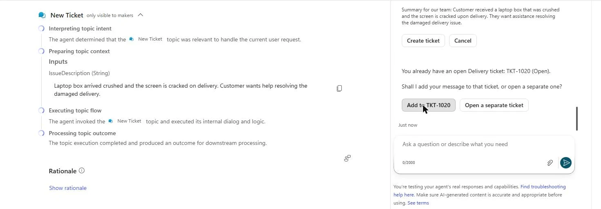
duplicate = Yes: the topic offers to add to TKT-1020.All 29 nodes in order from source
| # | Node | Configuration |
|---|---|---|
| 1 | Redirect to topic | Redirect to IdentifyCustomer |
| 2 | Condition | Branch |
| 3 | ↳ End current topicif =Global.CustomerVerified <> true | EndDialog |
| 4 | Set variable | Topic.Description = =Topic.IssueDescription |
| 5 | Condition | Branch |
| 6 | ↳ Questionif =IsBlank(Topic.Description) || Len(Topic.Description) < 20 | Ask “Please describe the problem in your own words. What happened, when, and what would you like us to do?” → Topic.Description (StringPrebuiltEntity) |
| 7 | Action · prompt | Run prompt Ticket Triage In IssueDescription==Topic.DescriptionOut predictionOutput→Topic.TriageResult |
| 8 | Set variable | Topic.TriageText = =Substitute(Substitute(Substitute(Topic.TriageResult.text, "```json", ""), "```", ""), Char(10), " ") |
| 9 | Set variable | Topic.Subject = =IfError(Text(ParseJSON(Topic.TriageText).subject), Left(Topic.Description, 60)) |
| 10 | Set variable | Topic.Category = =IfError(Text(ParseJSON(Topic.TriageText).category), "General") |
| 11 | Set variable | Topic.Priority = =IfError(Text(ParseJSON(Topic.TriageText).priority), "Medium") |
| 12 | Set variable | Topic.Summary = =IfError(Text(ParseJSON(Topic.TriageText).summary), Topic.Description) |
| 13 | Action · agent flow | Call List Customer Orders In text==Global.ContactIdOut ordercount→Topic.OrderCount, orderchoices→Topic.OrderChoices, orderlist→Topic.OrderList |
| 14 | Set variable | Topic.OrderChoicesAll = =If(IsBlank(Topic.OrderChoices), "NONE~Not about a specific order", Topic.OrderChoices & "|NONE~Not about a specific order") |
| 15 | Adaptive card | Adaptive card → Topic.CardAction, Topic.CategoryFinal, Topic.OrderPicked, Topic.PriorityFinal, Topic.SubjectFinal |
| 16 | Condition | Branch |
| 17 | ↳ Messageif =Topic.CardAction = "cancel" | Say “No problem, I haven't created anything. Is there something else I can help with?” |
| 18 | ↳ End current topicif =Topic.CardAction = "cancel" | EndDialog |
| 19 | Set variable | Topic.SubjectFinal = =If(IsBlank(Topic.SubjectFinal), Topic.Subject, Topic.SubjectFinal) |
| 20 | Action · agent flow | Call Create Ticket In text==Global.ContactId; text_1==If(Topic.OrderPicked = "NONE", "", Topic.OrderPicked); text_2==Topic.CategoryFinal; text_3==Topic.SubjectFinal; text_4==Topic.Description; text_5==Topic.Summary; text_6==Topic.PriorityFinal; text_7=="no"; text_8==Global.CustomerEmailOut duplicate→Topic.Duplicate, priority→Topic.TicketPriority, resolveby→Topic.ResolveBy, respondby→Topic.RespondBy, result→Topic.Result, status→Topic.ExistingStatus, team→Topic.Team, ticketnumber→Topic.TicketNumber |
| 21 | Condition | Branch |
| 22 | ↳ Messageif =Topic.Result = "Created" | Say “Done. Your ticket is **{Topic.TicketNumber}**. - Team: {Topic.Team} - Priority: {Topic.TicketPriority} - First reply by: {Topic.RespondBy} - Resolution target:…” |
| 23 | ↳ Adaptive cardif =Topic.Result = "Duplicate" | Adaptive card → Topic.DupChoice |
| 24 | ↳ Conditionif =Topic.Result = "Duplicate" | Branch |
| 25 | ↳ Action · agent flowif =Topic.DupChoice = "add" | Call Add Customer Reply In text==Topic.TicketNumber; text_1==Global.ContactId; text_2==Topic.DescriptionOut message→Topic.ReplyMessage, result→Topic.ReplyResult |
| 26 | ↳ Messageif =Topic.DupChoice = "add" | Say “{If(Topic.ReplyResult = "Added", Topic.ReplyMessage, "Sorry, I couldn't add your message just now. Please try again in a few minutes.")}” |
| 27 | ↳ Action · agent flowelse | Call Create Ticket In text==Global.ContactId; text_1==If(Topic.OrderPicked = "NONE", "", Topic.OrderPicked); text_2==Topic.CategoryFinal; text_3==Topic.SubjectFinal; text_4==Topic.Description; text_5==Topic.Summary; text_6==Topic.PriorityFinal; text_7=="yes"; text_8==Global.CustomerEmailOut duplicate→Topic.Duplicate, priority→Topic.TicketPriority, resolveby→Topic.ResolveBy, respondby→Topic.RespondBy, result→Topic.Result, status→Topic.ExistingStatus, team→Topic.Team, ticketnumber→Topic.TicketNumber |
| 28 | ↳ Messageelse | Say “Done. Your new ticket is **{Topic.TicketNumber}**. - Team: {Topic.Team} - Priority: {Topic.TicketPriority} - First reply by: {Topic.RespondBy} I've emailed you…” |
| 29 | ↳ Messageelse | Say “Sorry, something went wrong while creating your ticket. Please try again in a few minutes, or ask to talk to a person.” |
Check Ticket Status
- Trigger
- The agent chooses (generative orchestration)
- Description
- Use when a customer asks for the status of a support ticket, repair or complaint, wants an update, or mentions a ticket number such as TKT-1005. Shows status, team, SLA target, latest update and timeline, and lets the customer reply, rate the ticket or ask for a person.
- Inputs
- —
- Agent flows called
- Get Ticket Details, Add Customer Reply, List Customer Tickets
- Topics redirected to
- Escalate, IdentifyCustomer, RateTicket
- Globals used
ContactId,CurrentTicket,CustomerVerified- Nodes
- 27
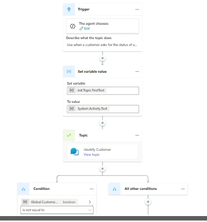
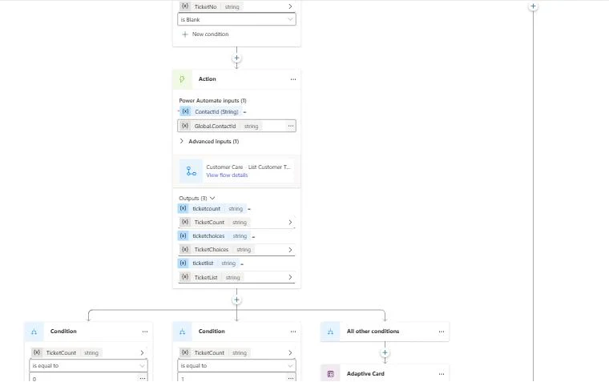
All 27 nodes in order from source
| # | Node | Configuration |
|---|---|---|
| 1 | Set variable | Topic.FirstText = =System.Activity.Text |
| 2 | Redirect to topic | Redirect to IdentifyCustomer |
| 3 | Condition | Branch |
| 4 | ↳ End current topicif =Global.CustomerVerified <> true | EndDialog |
| 5 | Set variable | Topic.TicketNo = =If(!IsBlank(Global.CurrentTicket), Global.CurrentTicket, IfError(Upper(Match(Topic.FirstText, "TKT-[0-9]{4,12}", MatchOptions.IgnoreCase).… |
| 6 | Condition | Branch |
| 7 | ↳ Action · agent flowif =IsBlank(Topic.TicketNo) | Call List Customer Tickets In text==Global.ContactId; text_1=="open"Out ticketchoices→Topic.TicketChoices, ticketcount→Topic.TicketCount, ticketlist→Topic.TicketList |
| 8 | ↳ Conditionif =IsBlank(Topic.TicketNo) | Branch |
| 9 | ↳ Messageif =Topic.TicketCount = "0" | Say “You don't have any open tickets. If something's wrong, tell me and I'll raise one.” |
| 10 | ↳ End current topicif =Topic.TicketCount = "0" | EndDialog |
| 11 | ↳ Set variableif =Topic.TicketCount = "1" | Topic.TicketNo = =First(Split(Topic.TicketChoices, "~")).Value |
| 12 | ↳ Adaptive cardelse | Adaptive card → Topic.PickAction, Topic.TicketNo |
| 13 | Set variable | Global.CurrentTicket = ="" |
| 14 | Action · agent flow | Call Get Ticket Details In text==Topic.TicketNo; text_1==Global.ContactIdOut canrate→Topic.CanRate, category→Topic.Category, latest→Topic.Latest, overdue→Topic.Overdue, priority→Topic.Priority, raised→Topic.Raised, resolveby→Topic.ResolveBy, result→Topic.Result, status→Topic.Status, subject→Topic.Subject, team→Topic.Team, timeline→Topic.Timeline |
| 15 | Condition | Branch |
| 16 | ↳ Messageif =Topic.Result = "Found" | Say “**{Topic.TicketNo}: {Topic.Subject}** - Status: **{Topic.Status}** - Team: {Topic.Team} - Priority: {Topic.Priority} - Raised: {Topic.Raised} - Resolution targ…” |
| 17 | ↳ Adaptive cardif =Topic.Result = "Found" | Adaptive card → Topic.Next |
| 18 | ↳ Conditionif =Topic.Result = "Found" | Branch |
| 19 | ↳ Questionif =Topic.Next = "reply" | Ask “What would you like to tell the {Topic.Team} team?” → Topic.ReplyText (StringPrebuiltEntity) |
| 20 | ↳ Action · agent flowif =Topic.Next = "reply" | Call Add Customer Reply In text==Topic.TicketNo; text_1==Global.ContactId; text_2==Topic.ReplyTextOut message→Topic.ReplyMessage, result→Topic.ReplyResult |
| 21 | ↳ Messageif =Topic.Next = "reply" | Say “{If(Topic.ReplyResult = "Added" || Topic.ReplyResult = "Closed", Topic.ReplyMessage, "Sorry, I couldn't add your message just now. Please try again in a few mi…” |
| 22 | ↳ Set variableif =Topic.Next = "person" | Global.CurrentTicket = =Topic.TicketNo |
| 23 | ↳ Redirect to topicif =Topic.Next = "person" | Redirect to Escalate |
| 24 | ↳ Set variableif =Topic.Next = "rate" | Global.CurrentTicket = =Topic.TicketNo |
| 25 | ↳ Redirect to topicif =Topic.Next = "rate" | Redirect to RateTicket |
| 26 | ↳ Messageelse | Say “You're welcome. I'll email you whenever the status changes.” |
| 27 | ↳ Messageelse | Say “{If(Topic.Result = "Error", "Sorry, I couldn't reach our ticket system just now. Please try again in a few minutes.", "I can't find " & Topic.TicketNo & " on y…” |
Track an Order
- Trigger
- The agent chooses (generative orchestration)
- Description
- Use when a verified customer asks where their order is, whether it has shipped, or for their tracking number. Lists the customer's own orders with status and tracking.
- Inputs
- —
- Agent flows called
- List Customer Orders
- Topics redirected to
- IdentifyCustomer
- Globals used
ContactId,CustomerVerified- Nodes
- 5
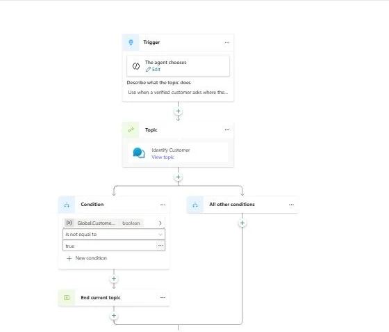
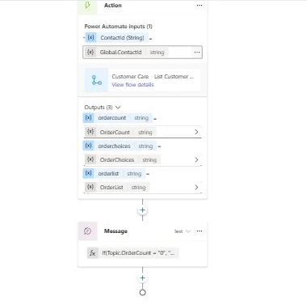
All 5 nodes in order from source
| # | Node | Configuration |
|---|---|---|
| 1 | Redirect to topic | Redirect to IdentifyCustomer |
| 2 | Condition | Branch |
| 3 | ↳ End current topicif =Global.CustomerVerified <> true | EndDialog |
| 4 | Action · agent flow | Call List Customer Orders In text==Global.ContactIdOut ordercount→Topic.OrderCount, orderchoices→Topic.OrderChoices, orderlist→Topic.OrderList |
| 5 | Message | Say “{If(Topic.OrderCount = "0", "I can't see any orders on your account yet.", If(Topic.OrderCount = "-1", "Sorry, I couldn't reach our order system just now. Plea…” |
Warranty Claim
- Trigger
- The agent chooses (generative orchestration)
- Description
- Use when a customer wants to make a warranty claim, repair or replacement for a faulty product, for example a laptop that will not charge or headphones that stopped working. Collects the serial number, purchase date and fault description, shows a summary card to confirm, then submits the claim and RMA.
- Inputs
- —
- Agent flows called
- RMA Process
- Topics redirected to
- IdentifyCustomer
- Globals used
ContactId,CustomerEmail,CustomerFullName,CustomerVerified- Nodes
- 18
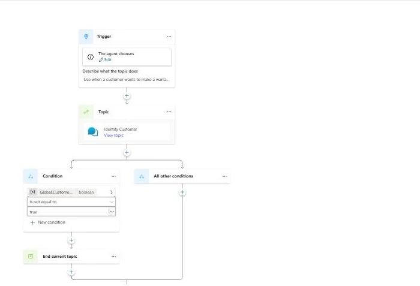

All 18 nodes in order from source
| # | Node | Configuration |
|---|---|---|
| 1 | Redirect to topic | Redirect to IdentifyCustomer |
| 2 | Condition | Branch |
| 3 | ↳ End current topicif =Global.CustomerVerified <> true | EndDialog |
| 4 | Message | Say “I'm sorry it's not working. I'll set up a warranty claim for you; it takes about a minute.” |
| 5 | Question | Ask “What's the product's serial number? It's on the label under the product and on your order, for example SN-LTP-48213.” → Topic.SerialNumber (entity SerialNumber) |
| 6 | Question | Ask “When did you buy it? An approximate date is fine.” → Topic.PurchaseDate (DatePrebuiltEntity) |
| 7 | Question | Ask “Please describe the problem in your own words. What happens, since when, and what have you already tried?” → Topic.FaultDescription (StringPrebuiltEntity) |
| 8 | Action · prompt | Run prompt Fault Summary for Technicians In CustomerDescription==Topic.FaultDescriptionOut predictionOutput→Topic.FaultSummaryResult |
| 9 | Set variable | Topic.FaultSummary = =If(IsBlank(Topic.FaultSummaryResult.text), Topic.FaultDescription, Topic.FaultSummaryResult.text) |
| 10 | Adaptive card | Adaptive card → Topic.CardAction |
| 11 | Condition | Branch |
| 12 | ↳ Messageif =Topic.CardAction = "submit" | Say “Thanks, submitting your claim now...” |
| 13 | ↳ Action · agent flowif =Topic.CardAction = "submit" | Call RMA Process In text==Upper(Topic.SerialNumber); text_1==Text(Topic.PurchaseDate, "yyyy-mm-dd"); text_2==Topic.FaultDescription; text_3==Topic.FaultSummary; text_4==Global.CustomerEmail; text_5==Global.CustomerFullName; text_6==Global.ContactIdOut claimnumber→Topic.ClaimNumber, inwarranty→Topic.InWarranty, outcome→Topic.Outcome, rmanumber→Topic.RMANumber, ticketnumber→Topic.TicketNumber, warrantyend→Topic.WarrantyEnd |
| 14 | ↳ Conditionif =Topic.CardAction = "submit" | Branch |
| 15 | ↳ Messageif =Topic.InWarranty = "Yes" | Say “Good news: your product is under warranty until {Topic.WarrantyEnd}, so your claim is approved. - Claim number: **{Topic.ClaimNumber}** - Return authorisation …” |
| 16 | ↳ Messageelse | Say “{Topic.Outcome} Your claim reference is **{Topic.ClaimNumber}**. If you'd like, I can connect you with a customer care specialist.” |
| 17 | ↳ Messageif =Topic.CardAction = "restart" | Say “No problem. Just tell me you want to make a warranty claim again and we'll start over with the right details.” |
| 18 | End current topic | EndDialog |
Rate a Ticket
- Trigger
- The agent chooses (generative orchestration)
- Description
- Use when a customer wants to rate a resolved support ticket or give feedback on how their request was handled, for example "Rate TKT-1003". Records a 1 to 5 satisfaction score and an optional comment.
- Inputs
- —
- Agent flows called
- Record CSAT, List Customer Tickets
- Topics redirected to
- IdentifyCustomer
- Globals used
ContactId,CurrentTicket,CustomerVerified- Nodes
- 16
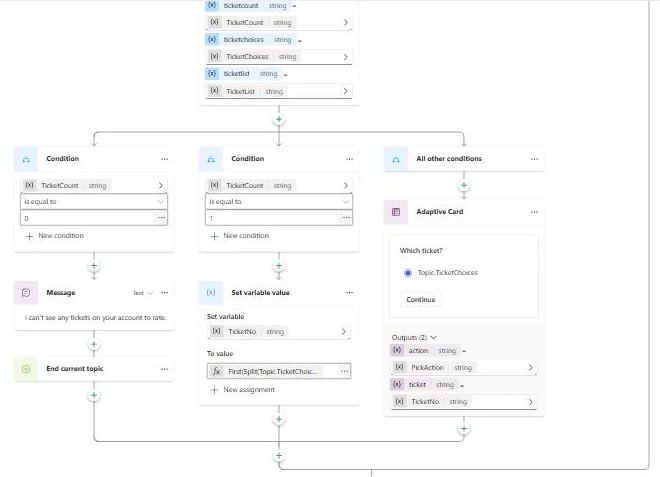
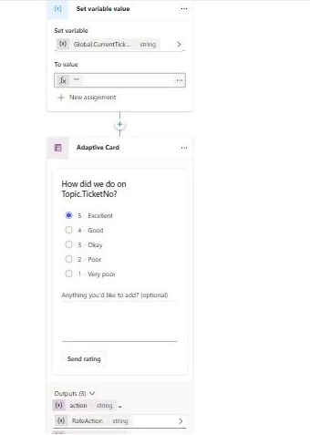
All 16 nodes in order from source
| # | Node | Configuration |
|---|---|---|
| 1 | Set variable | Topic.FirstText = =System.Activity.Text |
| 2 | Redirect to topic | Redirect to IdentifyCustomer |
| 3 | Condition | Branch |
| 4 | ↳ End current topicif =Global.CustomerVerified <> true | EndDialog |
| 5 | Set variable | Topic.TicketNo = =If(!IsBlank(Global.CurrentTicket), Global.CurrentTicket, IfError(Upper(Match(Topic.FirstText, "TKT-[0-9]{4,12}", MatchOptions.IgnoreCase).… |
| 6 | Condition | Branch |
| 7 | ↳ Action · agent flowif =IsBlank(Topic.TicketNo) | Call List Customer Tickets In text==Global.ContactId; text_1=="all"Out ticketchoices→Topic.TicketChoices, ticketcount→Topic.TicketCount, ticketlist→Topic.TicketList |
| 8 | ↳ Conditionif =IsBlank(Topic.TicketNo) | Branch |
| 9 | ↳ Messageif =Topic.TicketCount = "0" | Say “I can't see any tickets on your account to rate.” |
| 10 | ↳ End current topicif =Topic.TicketCount = "0" | EndDialog |
| 11 | ↳ Set variableif =Topic.TicketCount = "1" | Topic.TicketNo = =First(Split(Topic.TicketChoices, "~")).Value |
| 12 | ↳ Adaptive cardelse | Adaptive card → Topic.PickAction, Topic.TicketNo |
| 13 | Set variable | Global.CurrentTicket = ="" |
| 14 | Adaptive card | Adaptive card → Topic.RateAction, Topic.Comment, Topic.Score |
| 15 | Action · agent flow | Call Record CSAT In text==Topic.TicketNo; text_1==Global.ContactId; text_2==Topic.Score; text_3==Topic.CommentOut result→Topic.Result |
| 16 | Message | Say “{Switch(Topic.Result, "Saved", "Thank you! I've recorded " & Topic.Score & " out of 5 for " & Topic.TicketNo & "." & If(Value(Topic.Score) <= 2, " I'm sorry we…” |
Greeting
- Trigger
- The agent chooses (generative orchestration)
- Description
- —
- Inputs
- —
- Agent flows called
- —
- Topics redirected to
- MainMenu
- Globals used
- —
- Nodes
- 2
All 2 nodes in order from source
| # | Node | Configuration |
|---|---|---|
| 1 | Message | Say “{"text": ["Hi! I'm the Vink Electronics customer care assistant."], "speak": ["Hello, <break strength=\"medium\" /> how can I help?"]}” |
| 2 | Redirect to topic | Redirect to MainMenu |
Goodbye
- Trigger
- The agent chooses (generative orchestration)
- Description
- —
- Inputs
- —
- Agent flows called
- —
- Topics redirected to
- EndofConversation
- Globals used
- —
- Nodes
- 4
All 4 nodes in order from source
| # | Node | Configuration |
|---|---|---|
| 1 | Question | Ask “Would you like to end our conversation?” → Topic.EndConversation (BooleanPrebuiltEntity) |
| 2 | Condition | Branch |
| 3 | ↳ Redirect to topicif =Topic.EndConversation = true | Redirect to EndofConversation |
| 4 | ↳ Messageif =Topic.EndConversation = false | Say “Go ahead. I'm listening.” |
Start Over
- Trigger
- The agent chooses (generative orchestration)
- Description
- —
- Inputs
- —
- Agent flows called
- —
- Topics redirected to
- ResetConversation
- Globals used
- —
- Nodes
- 4
All 4 nodes in order from source
| # | Node | Configuration |
|---|---|---|
| 1 | Question | Ask “Are you sure you want to restart the conversation?” → Topic.Confirm (BooleanPrebuiltEntity) |
| 2 | Condition | Branch |
| 3 | ↳ Redirect to topicif =Topic.Confirm = true | Redirect to ResetConversation |
| 4 | ↳ Messageelse | Say “Ok. Let's carry on.” |
Thank you
- Trigger
- The agent chooses (generative orchestration)
- Description
- —
- Inputs
- —
- Agent flows called
- —
- Topics redirected to
- —
- Globals used
- —
- Nodes
- 1
All 1 nodes in order from source
| # | Node | Configuration |
|---|---|---|
| 1 | Message | Say “You're welcome.” |
Escalate
- Trigger
- OnEscalate
- Description
- —
- Inputs
- —
- Agent flows called
- Escalate Ticket, Create Ticket, List Customer Tickets
- Topics redirected to
- IdentifyCustomer
- Globals used
ContactId,CurrentTicket,CustomerEmail,CustomerVerified- Nodes
- 18
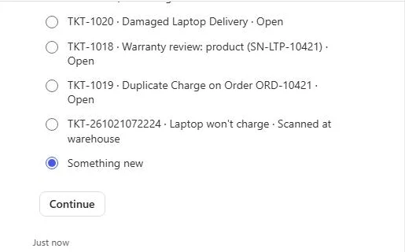
All 18 nodes in order from source
| # | Node | Configuration |
|---|---|---|
| 1 | Message | Say “I'll connect you with a customer care specialist. If this is a safety issue, such as a swollen battery, smoke or a burning smell, please stop using the product…” |
| 2 | Redirect to topic | Redirect to IdentifyCustomer |
| 3 | Condition | Branch |
| 4 | ↳ End current topicif =Global.CustomerVerified <> true | EndDialog |
| 5 | Set variable | Topic.TicketNo = =Global.CurrentTicket |
| 6 | Condition | Branch |
| 7 | ↳ Action · agent flowif =IsBlank(Topic.TicketNo) | Call List Customer Tickets In text==Global.ContactId; text_1=="open"Out ticketchoices→Topic.TicketChoices, ticketcount→Topic.TicketCount, ticketlist→Topic.TicketList |
| 8 | ↳ Conditionif =IsBlank(Topic.TicketNo) | Branch |
| 9 | ↳ Adaptive cardif =Value(Topic.TicketCount) > 0 | Adaptive card → Topic.PickAction, Topic.Picked |
| 10 | ↳ Set variableif =Value(Topic.TicketCount) > 0 | Topic.TicketNo = =If(Topic.Picked = "NEW", "", Topic.Picked) |
| 11 | Question | Ask “In a sentence or two, what do you need the specialist to help with?” → Topic.Reason (StringPrebuiltEntity) |
| 12 | Condition | Branch |
| 13 | ↳ Action · agent flowif =IsBlank(Topic.TicketNo) | Call Create Ticket In text==Global.ContactId; text_1==""; text_2=="General"; text_3=="Customer asked to speak to a person"; text_4==Topic.Reason; text_5==Topic.Reason; text_6=="High"; text_7=="yes"; text_8==Global.CustomerEmailOut result→Topic.CreateResult, ticketnumber→Topic.TicketNo |
| 14 | Action · agent flow | Call Escalate Ticket In text==Topic.TicketNo; text_1==Global.ContactId; text_2==Topic.ReasonOut result→Topic.EscResult, team→Topic.EscTeam |
| 15 | Set variable | Global.CurrentTicket = ="" |
| 16 | Condition | Branch |
| 17 | ↳ Messageif =Topic.EscResult = "Escalated" | Say “Done. I've passed **{Topic.TicketNo}** to a senior member of the {Topic.EscTeam} team. They'll contact you within one business day (Monday to Saturday, 9:00 to…” |
| 18 | ↳ Messageelse | Say “Sorry, I couldn't pass this on automatically. Please email our customer care team and quote {If(IsBlank(Topic.TicketNo), "your order number", Topic.TicketNo)};…” |
Other system topics
| Topic | Nodes | Description |
|---|---|---|
| Conversation Start | 1 | Default behaviour |
| Fallback | 3 | Default behaviour |
| On Error | 6 | Default behaviour |
| End of Conversation | 13 | Default behaviour |
| Multiple Topics Matched | 6 | Default behaviour |
| Reset Conversation | 3 | Default behaviour |
| Sign in | 3 | Default behaviour |
| Conversational boosting | 3 | Default behaviour |